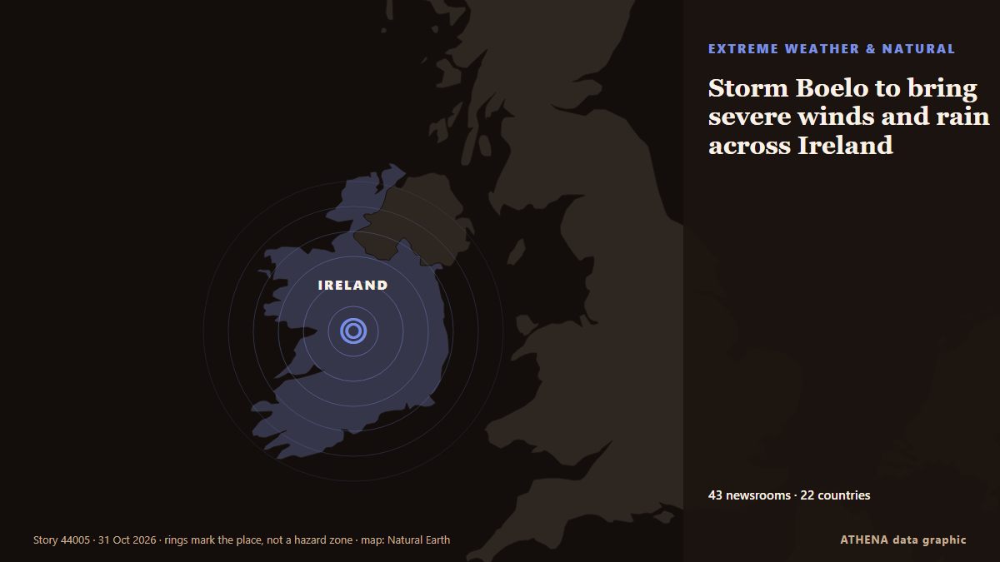

Storm Boelo to bring severe winds and rain across Ireland

Storm Boelo is forecast to bring severe wind and rain to the south, southwest and north today, with Status Orange weather alerts in place for a number of counties. from RTÉ News
Reported independently by 43 outlets in 22 countries since 20 Oct, first by Arabian Business; coverage is fading. ATHENA rates the risk high (6.2/10), driven mainly by the severity of the harm described and its geographic and sector reach. Confidence is 87% (high), with 43 independent outlets corroborating it and an average source reliability of 71%. Newsrooms by country: United Kingdom (15), United Arab Emirates (4), Ireland (4). Coverage: 20 Oct to 28 Oct, 200 hours.
Why it matters: Energy and resource developments affect fuel and power prices, supply security and climate commitments.
What changed: 1 new report in the 24 hours to 31 Oct.
First reported as: Five counties under Orange warning during Storm Boelo
At a glance
Selected, scored and written by ATHENA's published methodology. No editor intervenes in individual events. How this is produced ›
| 20 Oct 08:26 UTC | 1 |
|---|---|
| 20 Oct 20:26 UTC | 1 |
| 21 Oct 08:26 UTC | 0 |
| 21 Oct 20:26 UTC | 0 |
| 22 Oct 08:26 UTC | 1 |
| 22 Oct 20:26 UTC | 0 |
| 23 Oct 08:26 UTC | 0 |
| 23 Oct 20:26 UTC | 3 |
| 24 Oct 08:26 UTC | 0 |
| 24 Oct 20:26 UTC | 0 |
| 25 Oct 08:26 UTC | 2 |
| 25 Oct 20:26 UTC | 0 |
| 26 Oct 08:26 UTC | 5 |
| 26 Oct 20:26 UTC | 9 |
| 27 Oct 08:26 UTC | 7 |
| 27 Oct 20:26 UTC | 4 |
| 28 Oct 08:26 UTC | 17 |
| 28 Oct 20:26 UTC | 7 |
| 29 Oct 08:26 UTC | 3 |
| 29 Oct 20:26 UTC | 0 |
| 30 Oct 08:26 UTC | 0 |
| 30 Oct 20:26 UTC | 0 |
| 31 Oct 08:26 UTC | 1 |
| 28 Oct 16:42 UTC | 6.0 |
|---|---|
| 30 Oct 09:36 UTC | 6.1 |
| 31 Oct 16:55 UTC | 6.2 |
Why these numbers
Importance
Risk
Confidence
The reporting — who reported it, and when
headline as published · opens the original- Arabian Business · United Arab EmiratesUAE weather: Rain and colder temperatures forecast this week
- Arabian Business · United Arab EmiratesUAE weather: Forecasters predict where rain will fall hardest this week amid thunderstorm warning
- Arabian Business · United Arab EmiratesDubai prepares for UAE rain forecast with 675 emergency staff and 1,100 machines
- RTÉ News · IrelandFive counties under Orange warning during Storm Boelo
- The Irish News (Belfast) · United KingdomStorm Boelo: Thousands of homes without power and traffic disruption as high winds batter Northern Ireland
- IOL · South AfricaDozens of flights cancelled at Amsterdam airport due to strong winds
- The Irish News (Belfast) · United KingdomNew Northern Ireland weather warnings issued for high winds
- Evening Standard (London) · United KingdomEfforts continue to restore power after Storm Boelo amid further wind warnings
- Nation.Cymru · United KingdomThree flood warnings in Wales as further rain and strong winds approach
- The Portugal News · PortugalAlgarve wind farm shows how to protect migrating birds
- Newsroom Panama · PanamaHigh Waves and Winds in the Panamanian Pacific Until October 31. A Warning Issued By SINAPROC.
- The Herald (Scotland) · United KingdomStorm-hit Scots demand answers as flood damage sparks 'serious questions'
- TheJournal.ie · Ireland'It wasn't a voluntary emigration': Patsy O'Sullivan was part of a generation who fled Ireland
- Manchester Evening News · United KingdomThe 10 'act now' flood warnings still in force across the North West tonight
- Free Malaysia Today · MalaysiaMalaysia’s Manjari makes her numbers count in Ireland
- Malay Mail · MalaysiaHeavy rain, high tides put Pulau Perhentian villagers on alert as monsoon season begins
- to vima · GreeceBad Weather to Persist in Greece Through Wednesday
- Mainichi (English) · JapanSiemens to set up regional base for wind turbine maintenance in Hokkaido
- Daily Mirror · Sri LankaSevere lightning advisory issued for Ampara and Batticaloa
- The Herald (Scotland) · United KingdomRail route disrupted after high winds hit vital bridge
- RTÉ News · IrelandNo single answer to geo-blocking TV content in NI - Ofcom
- Arabian Business · United Arab EmiratesUAE weather: Rain forecast until Friday
- The Hindu · IndiaRivers in north Andhra under watch amid cyclone-triggered rains
- The Herald (Scotland) · United KingdomHistoric golf club submerged after Storm Boelo as damage 'difficult to imagine'
- The Rio Times · BrazilPeru Red Rain Alert as River Hits 30 Homes
- Belfast Telegraph · United KingdomNature recovery plan launched amid Northern Ireland biodiversity decline
- The Irish News (Belfast) · United KingdomNature recovery plan launched amid Northern Ireland biodiversity decline
- Cyprus Mail · CyprusThunderstorms, hail and gale force winds batter Cyprus as low barometric engulfs island
- Daily Mirror · Sri LankaLightning alert for Eastern areas
- Irish Independent · IrelandBank of Ireland raises income forecast as lending grows by €3.6bn
- Hindustan Times · IndiaThree killed by storm in southern India
- Channels TV · NigeriaThree Killed By Storm In Southern India
- The Herald (Scotland) · United KingdomCalmer weather follows in the wake of double-storm disruption
- WalesOnline · United KingdomSwimmer helpless and dragged out to sea in rip tide during storm
- The Namibian · NamibiaN$1.6bn Lüderitz wind farm to boost energy supply
- RÚV English · IcelandGale warnings issued for early Thursday
- ProtoThema English ·Severe flooding hits Skiathos as emergency alert issued for southern Pelion
- Evening Standard (London) · United KingdomWe want to bring hope and reconciliation, Northern Ireland clerics say
- Belfast Telegraph · United KingdomWe want to bring hope and reconciliation, Northern Ireland clerics say
- The Herald (Scotland) · United KingdomRenfrew Bridge closed for several months after Storm Boelo flooding damage